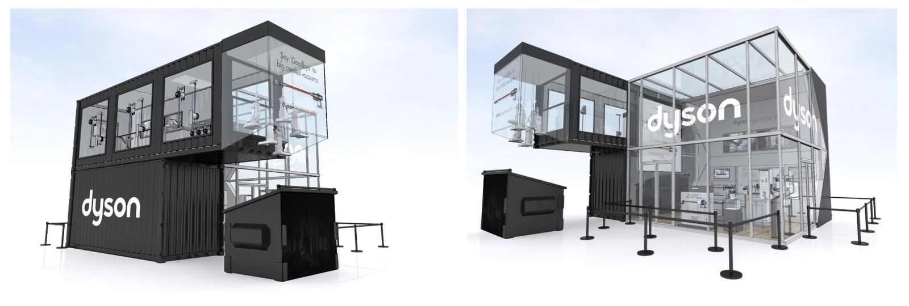
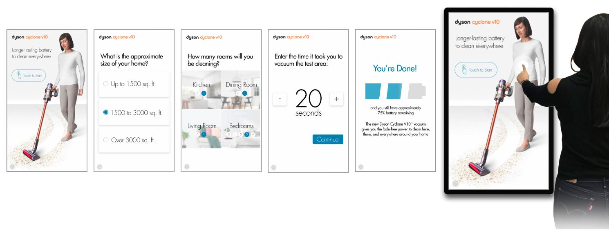

Dyson
Dyson V10 Launch Event
A museum of one vacuum, built to make the launch a literal bang.
The Cyclone V10, Dyson's latest invention, came to market under the banner of "Cutting the Cord" as Dyson stepped boldly into cordless, high power, long lasting vacuum territory.
They wanted to make a literal bang, so we created the Dyson Innovation House in downtown Toronto: a museum that stripped the new vacuum down to its core components, with interactive stations that showed the level of innovation that makes the V10 a wonder of engineering.

We put the V10 in people's hands and tested it in messy, real life scenarios. Each guest could scan their invite for a chance to cut the cord and take home a new Dyson. The spectacle put on by participants made thousands of real life impressions and wowed the public with science, and a little bit of theatre.
Interactive "time of use" stations showed how a battery powered vacuum could outperform corded ones in homes of every size, with charge to spare.
